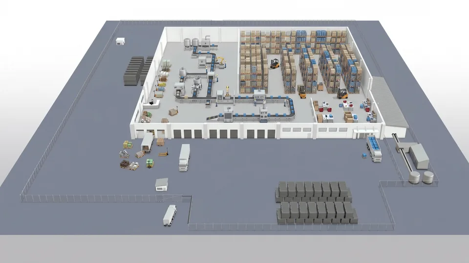

Superado por lo implementado.
Los bocetos de hero con el plano adentro (variantes A y B) no se usaron: el recorte no
puede llevar los puntos de los módulos y el hero quedaba sobrecargado. En su lugar va la
captura de la aplicación. El mapa de secciones, la línea de las máquinas, el precio a la
vista, la fusión y los tabs sí se implementaron. Los números reales están en
2026-10-19-diagnostico-conversion-home.md, no acá.
Los logos quedan como están (cambio 3 descartado). Lo que sigue usa los tokens reales
de src/tokens/ y las medidas reales del sitio publicado — ningún color ni
número inventado. Es un boceto de estructura y jerarquía, no el diseño final.
Altos medidos a 375px. Dos movimientos: el problema sube por encima del catálogo, y los tres bloques de “además hacemos más cosas” se funden en uno.
| Saldo | Hoy | Propuesta |
|---|---|---|
| Secciones | 13 | 12 |
| Encabezados H2 | 13 | 11 |
| Alto en mobile | 15.017px | ~13.100px |
| Pantallas de scroll (375px) | 18,5 | ~16,1 |
Dónde queda el problema. Hoy el visitante llega al bloque del problema
después de 4.051px de catálogo. Con el cambio lo lee a los ~1.120px, antes de que le muestres
un solo módulo. Para alguien que no sabe que esta categoría existe, ese es el orden que importa.
Los números de la columna derecha son estimaciones, salvo los que no cambian. Los reales
se miden cuando esté implementado, igual que hice con los de la izquierda.
La que puse estaba mal, y no por gusto: ustedes sí venden hardware — está en el marketplace, con plazo de entrega de 1 a 10 días. “Sin comprar hardware” se contradice con la propia oferta y además regala margen. Lo que es cierto es que no hay que tocar las máquinas.
Sin comprar hardware. Conectamos el PLC o el sensor que ya tenés.
Con las máquinas que ya tenés. Conectamos el PLC o un sensor y obtenemos la información de la línea.
Afirmativa: no pide permiso ni niega nada, describe cómo entra. Y cierra el circuito en tres tiempos — con qué (las máquinas que ya tenés), qué hacemos (conectamos) y qué obtenés (la información de la línea). La versión anterior se quedaba en el segundo tiempo y dejaba al lector preguntándose para qué.
Sin cambiar una máquina. Conectamos el PLC o un sensor y obtenemos la información de la línea.
Niega la objeción de frente. Más filosa y más corta, pero introduce la idea de “cambiar máquinas” en la cabeza del que leía tranquilo. Conviene si el outbound confirma que esa es la primera pregunta que hacen.
En los bocetos de abajo uso la primera. Son intercambiables: es una línea en
src/content/.
El render es 16:9 y tiene mucho gris muerto alrededor de la nave, así que no entra igual de bien en cualquier lugar. Dos maneras de meterlo, con lo que gana y lo que pierde cada una.
El hero sigue a una columna y el plano cierra la primera pantalla, cortado por el fold. Es el mismo bloque que hoy está en la posición 3, movido acá — no se repite: baja de “Una sola plataforma”, que se queda con la grilla de módulos y adelgaza ~900px.
InspectIA · Una plataforma con soluciones para toda la operación de una fábrica
Ves lo que hoy se pierde entre planillas, entendés por qué pasa y ajustás antes de que te cueste.
Desde USD 50 por módulo, con plan gratuito en cada uno. Ver el precio completo

375px — el plano asoma en el corte e invita a scrollear
La lista de siete módulos se puede sacar: el plano es esa lista, pero mostrada.
El plano cae donde hoy hay un hueco, y libera ~900px de la sección 3.
A lo ancho el render se lee: los puntos quedan separados.
Empuja el fold. Los botones siguen arriba del corte, pero el plano queda cortado al medio.
En mobile los ocho puntos quedan a ~30px entre sí: se ven, pero tocarlos es incómodo. Se resuelve dejándolos de adorno en mobile y activos de 900px para arriba.
Pierde el plano y se queda con la grilla de siete módulos y su encabezado centrado. De 2.178px pasa a ~1.250px. Sumado a la fusión, la home baja a ~13.000px.
En desktop el texto va a la izquierda y a la derecha entra el plano recortado sobre la nave, que es donde está la información. El render completo tiene el 40 % de superficie en gris vacío; recortado se ve la línea, los racks y los autoelevadores. En mobile cae a la variante A.
InspectIA · Una plataforma con soluciones para toda la operación de una fábrica
Ves lo que hoy se pierde entre planillas, entendés por qué pasa y ajustás antes de que te cueste.
Desde USD 50 por módulo, con plan gratuito en cada uno. Ver el precio completo
El recorte muestra operación: cintas, racks, autoelevadores. El render completo, a este tamaño, muestra sobre todo piso gris.
Los puntos quedan lejos entre sí y el tooltip entra cómodo.
El hero no se estira: todo entra arriba del fold en desktop.
El recorte es una vista distinta de la misma imagen: hay que decidir si el plano completo sigue existiendo más abajo o desaparece.
Si sigue existiendo, se repite el render dos veces en la misma página.
Necesita un asset nuevo recortado (o un object-position fijo, que es más frágil si mañana cambia el render).
La A. Mueve el plano en vez de duplicarlo, saca la lista de texto de los siete módulos —que el plano ya dice, pero mostrando— y de paso adelgaza la sección más larga de la home. La B se ve mejor en desktop, pero deja abierta la pregunta de qué hacer con el plano completo, y cualquier respuesta cuesta: o lo repetís, o perdés el bloque interactivo que hoy es lo más distintivo que tiene el sitio.
Si querés las dos: A en mobile y B en desktop es exactamente el mismo componente con dos recortes. Es más trabajo, no mucho más.
El bloque del problema ya existe y está bien escrito. Solo cambia de lugar: pasa de la posición 4 a la 3, por encima del catálogo. No hay copy nuevo.
Confían en nosotros
El costo de no medir
La mayoría de las plantas ya sabe que pierde plata en estos tres frentes. Lo que no tiene es el número, y sin el número no hay nada que corregir.
La pieza mala sigue en el proceso hasta que alguien la ve, y a veces la ve el cliente.
Lo resuelve: Calidad →La línea se frena varias veces por turno y el motivo queda en la memoria del supervisor.
Lo resuelve: Producción →Posición 3 — antes estaba en la 4, detrás de 2.178px de catálogo
Cada tarjeta termina en “Lo resuelve: Calidad / Producción / Stock”. Puestas antes del catálogo, esos enlaces son la entrada natural al bloque siguiente: el lector llega a la grilla de módulos buscando algo, en vez de recibiéndola.
Puestas después, como hoy, repiten información que el lector ya vio y los enlaces apuntan hacia arriba.
Mover dos líneas en src/routes/index.tsx: <CostOfNotMeasuring />
por encima de <Platform />. Sin cambios de componente ni de copy.
El fondo alterna claro/oscuro entre secciones. Al intercambiar dos, puede quedar claro contra claro — se chequea al abrir la página, no antes.
Hoy son dos secciones y tres encabezados seguidos —“Sumale IA”, “Y hasta un 50 % con Kit 4.0”, “Todo lo que el proyecto necesita, en un solo proveedor”— que dicen la misma cosa tres veces: además hacemos más. Juntos ocupan 2.312px. Como un bloque de tres columnas, el mismo contenido se lee como una oferta completa en vez de tres ofertas laterales.
El proyecto completo
Un proyecto de planta casi nunca es sólo software: hacen falta cámaras, sensores, un ERP que hable con el resto, y a veces plata que no está. Las tres puertas salen del mismo lugar.
Visión artificial, modelos y agentes sobre lo que ya estás midiendo. Se cotiza como proyecto.
Ver aplicaciones de IA →Cámaras, sensores, lectoras, la instalación en piso y la integración con tu ERP.
Ver el marketplace →Ahorro: ~1.200px y una sección menos. En mobile las tres columnas se apilan, así que ahí el ahorro viene de sacar los encabezados y los dos bloques de introducción repetidos, no de la grilla.
Los cuatro controles de “¿Desde dónde lo mirás?” miden 36px de alto. Son botones reales que se tocan con el dedo, en un celular, probablemente con luz de planta.
Hoy · 36px de alto — 8px por debajo del mínimo
Propuesta · 44px — mínimo táctil cumplido
Es un cambio de clase en AudienceTabs.tsx. Suma ~22px al alto de la
sección en desktop y algo más en mobile, donde los tabs se apilan en dos filas.
Los logos quedan exactamente como están: marquee de 17, sin partir. Era el cambio 3 y lo
descartaste.
La captura de la app sigue pendiente de que la pases: el hero ya tiene escrito el layout
de dos columnas y se activa solo cuando cargues APP_SHOT. En este boceto el hero va
a una columna, que es como se ve hoy.
El GTM sigue sin importar, así que nada de esto se va a poder medir cuando llegue tráfico.